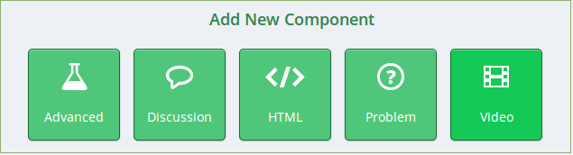

The first thing you will be presented with is a simple authentication window:
username: edx
password: edx
http://localhost/activate/d0649a021e484c3fa04e460c6424f59b
You should then strip off the first part ('http://localhost') and change it to 'http://54.164.39.36:18010'
ie: given the example above...
you would go to:
http://54.164.39.36:18010/activate/d0649a021e484c3fa04e460c6424f59b
We need to make your edX Studio account know about the WorldMap connector. To do this, you need to pull down the "Settings" menu and choose "Advanced Settings..."
Then enter the key name "worldmap" as shown below (be sure to include the double-quotes and make all-lowercase):
At this point, you should be able to click the button:
and begin the process of creating your first course. When you get to the point where you create your first "New Unit", you will see that you have the following choices: You should pick "Advanced" when you create a new unit to create a worldmap unit.

Pick the "Advanced" button and you will get a list of the advanced modules (NOTE: there will be only one choice).
Pick "WorldMap".
It will first come up with a simplified demo setup (like the one that used in the demo video) - you can play with that or clean it out and start over with something else.
Note: you will only be able to use the boston census map url that is with the demo, one of my next tasks is to instrument the chinaX map so that it can be used by the WorldMap edX plugin.